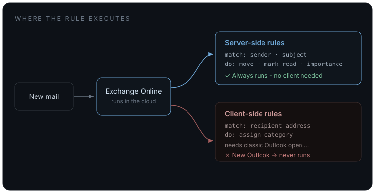

My inbox had turned into a slow-motion landslide
I had done the normal responsible-person thing: built Outlook rules. Sender rules, subject rules, mailing-list rules, notification rules. They helped, but only partially. That is the honest word for most hand-built inbox automation: partial. A rule can match a sender or a phrase. It cannot tell you that the third reply in a quiet thread is the one waiting on a decision from you.
There was a second reason I cared about fixing it properly. Someone close to me lives in the same inbox pressure, but in a normal, non-technical role, with only Microsoft 365 Copilot available. I could not hand her my tooling, and I would not want to. The goal became two-sided: clean up my own inbox, then pull out the parts that would transfer to someone who has no scripting environment, no admin rights, and no interest in becoming an Exchange engineer.
So I started where most Microsoft users would start: with the AI already sitting in the suite.
Copilot could read, but it would not act
Copilot is useful. It can summarize a thread, draft a reply, and help you catch up. In Outlook, that is often genuinely helpful.
But for this problem, it was not enough.
I did not need another summary of the mess. I needed something to work through the mess. I needed an agent that could inspect the mailbox, design a cleanup strategy, test rules, move messages, validate the result, and keep adjusting when reality did what reality always does.
Copilot was a smart passenger. I needed something that could take the wheel.
The more agentic Microsoft path exists, but it sat behind a permission grant my IT was not going to approve. That is not a criticism of IT; that is the default state of enterprise AI right now. The most interesting tier is usually the tier that wants broad permission to act across business data. That is exactly the tier security teams have to slow down.
So I stopped looking for a new sanctioned tool and turned to the agent I already had.
The local agent
I was already running Claude Code locally: an agentic coding assistant on my laptop, operating as me, with the same access I already had.
That distinction matters. This was not a browser chatbot giving advice. It was an agent in my environment that could write code, run it, read the result, fail, adjust, and try again. The important difference was not raw model intelligence. The important difference was agency.
I pointed it at the real task:
Clean up my mailbox, find what actually needs my attention, and make sure the cleanup keeps working.
That is where the useful part of the story begins, because real automation work is not a demo. It is a chain of almost-right attempts, hidden platform behavior, and boring verification details that decide whether the system works.
The messy middle
The clean path was Microsoft Graph. That is the right API for mailbox automation, and it was the first place the agent went.
It hit the same wall as the agentic Microsoft option: admin consent.
So it pivoted to a door that was already open. Classic Outlook exposes a COM automation surface that runs through the Outlook session I am already signed into:
$outlook = New-Object -ComObject Outlook.Application
$namespace = $outlook.GetNamespace("MAPI")
$rules = $namespace.DefaultStore.GetRules()No new tenant permission. No admin approval. No new identity. Just automation operating as me.
Then the work fought back.
The Outlook object model had gaps. Some actions I wanted, like marking messages as read or changing importance, were not available the way I expected. Rule saves were transactional enough that one bad action could invalidate the whole set. The agent changed approach: create and validate one rule at a time, read back the result, and roll back only the failed piece instead of losing the full ruleset.
Folder moves had their own trap. Assigning a target folder through the normal PowerShell property path looked successful, but the rule saved invalid. The fix was to write the property through reflection:
$action = $rule.Actions.MoveToFolder
$action.Enabled = $true
$action.GetType().InvokeMember(
"Folder",
[System.Reflection.BindingFlags]::SetProperty,
$null, $action, @($target))That was not cleverness for its own sake. The agent found it because it verified the write by reading the rule back and noticing the folder was still empty.
There were smaller traps too. Outlook inserts new rules at the top, so execution order was reversed from creation order. Categories were comma-delimited, not semicolon-delimited. A one-character assumption silently broke multi-category edits until a read-back exposed it.
That is the part I appreciate most about agentic work. It is not magic. It is persistence. Write, run, inspect, correct. A loop with hands.
The part rules could never do
Once the plumbing worked, I had the agent read the body of every unread message and answer one question:
Is someone actually waiting on me?
Out of 157 unread messages, the honest answer was two.
That was the line between automation and AI. Rules can handle bulk. They can move list traffic, file reports, and clear notifications. They cannot read intent across a thread and decide whether a human is waiting on you. A reasoning model can.
The lesson was not "use AI for everything." It was the opposite:
Use deterministic automation for the bulk, and use AI only where judgment is required.
The hidden reason my rules were broken
The biggest discovery was not that some rules were messy. It was that several of them had quietly stopped running.
Outlook rules have a flag almost nobody thinks about:
$store.GetRules() | Select-Object Name, Enabled, IsLocalRule
IsLocalRule = True means the rule is client-side. It
only runs when classic Outlook is open.
IsLocalRule = False means the rule is server-side.
Exchange runs it regardless of which client you use.
I live mostly in new Outlook. Classic Outlook is not open. So every client-side rule I had was decorative.
The split was simple:
- Server-side rules matched sender or subject and moved the message.
- Client-side rules assigned categories or matched on recipient address.

That is infrastructure, not inbox trivia. Location of execution changed the behavior completely.
The agent rewrote what could be rewritten: recipient matches became sender matches, cosmetic categories were dropped where folders carried the real signal, and anything that truly needed server-side behavior moved to Exchange Online inbox rules:
Connect-ExchangeOnline # my own login
New-InboxRule -Name "Mailing Lists" -Priority 7 `
-FromAddressContainsWords "list@example.org" `
-MoveToFolder "me@example.com:\Inbox\Mailing Lists" `
-MarkAsRead $true -StopProcessingRules $trueThat move fixed two problems at once. The rules now run in Exchange whether Outlook is open or not, and Exchange Online exposes useful actions the COM route did not: mark as read, mark importance, and server-side categories.
The work started as an inbox cleanup. It became an execution-location problem.
Why this is an infrastructure-and-AI story
There are two versions of the same question running through the whole thing.
First: where does the automation run?
A rule that runs in Exchange is not equivalent to a rule that runs in a desktop client that is never open. Same mailbox, same intent, different execution plane, totally different outcome.
Second: where does the agent run, as whom, and what data crosses what boundary?
That is the enterprise AI question hiding underneath the practical story. The unlock was not a smarter model. Copilot was already smart enough to summarize and reason. The unlock was an agent running in my environment, as me, using access I already had, able to take action without a new tenant-wide permission grant.
This does not make governance disappear. It makes the governance question more precise.
If mailbox content goes to a hosted model, business email leaves the environment. That is a real data decision. If the same classification task runs on a local model, the content stays on the machine. The local route may be smaller and slower, but for questions like "is this actionable?" it may be enough.
The model is a dial. The architecture is the point.
What transfers if all you have is Copilot
The implementation does not transfer cleanly to someone in a non-technical role. The shape does.
If all you have is Outlook and Copilot, the useful pattern is still available:
- Separate filing from judgment. Most email needs to be filed, not thought about. Use rules for high-confidence senders, reports, newsletters, and list traffic. Save human attention for the smaller pile that remains.
- Use Copilot as a reader, not an operator. Ask it what is waiting on you, what decisions are implied, and what threads changed this week. Let it surface the judgment work. Do not expect it to maintain the system.
- Build rules in Outlook on the web. Web rules are Exchange rules. They run everywhere: phone, browser, new Outlook, desktop. That one choice avoids the client-side trap that broke half of my old setup.
- Archive to a baseline. Do not perfectly triage a haystack. Move old read mail out of the way, create a clean working set, and let the new system handle mail from that point forward.
- Notice how little is actually urgent. Two messages out of 157 needed me. That was the most freeing result of the whole exercise. Most inbox stress is noise impersonating importance.
Different role, different tools, same operating model: deterministic systems handle volume; AI helps with judgment; the human decides.
Takeaways
Agency beats intelligence. A smart assistant can explain the mess. An agent can work the mess.
Where something runs is a first-class design decision. Client-side versus server-side was the difference between rules that looked fine and rules that actually executed. Hosted versus local is the same question one level up for AI.
Existing access matters. The agent did not need a new enterprise grant because it operated as me, inside my environment. That is not a loophole; it is a different architecture.
Use rules for bulk and models for intent. Deterministic where you can, intelligent where you must.
Verify writes with reads. Half the failures were invisible until the agent checked the state it thought it had changed.
My inbox is clean now, and it stays clean without caring which mail client I have open. The important part was not that AI knew what to do. The important part was that I already had an agent that could do it.